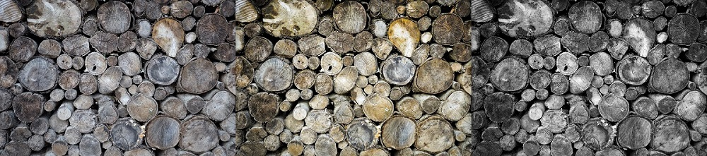

#02. Computer-aided Design
Designing a stationary
For the Fab Academy i decided i needed to have a dedicated notebook and then i realized i needed some sort of stationary to hold a pen, pencil and eraser. So i start designing it as you can see in the picture below.
I did this design on AutoCAD from Autodesk, wish is a software i use before and was more confortable with. As you can see in the image above i started with the 2D design section and its side view and then it was just a matter of extrusion both views and making its intersection resulting in the 3D parts seen below, also, before i made the final part i started with a fraction of the part just to make sure the diameters were correct. The result was the following:
The stationary still isn't fully functional and need a little tweek here and there but it almost there.
Image enhancement
I had some drawings i've made of my idea on the notebook and wanted to use them on page so i ended up using Krita, explored the program a bit and then discovered the levels and used this tools to improve what i needed. The images can be seen at the final project page.
Also, the banner on my homepage is one i took at "Quinta da Regaleira" in Sintra, Portugal, it was a wall made on fallen logs and i locked very raw and beatiful. I used Adobe Photoshop Lightroom to make the transformation below and it took around 30 adjustments to get to the final image. For the banner i ended up turning B&W for a more simple and clean look.
Other softwares
I tryed freecad and blender but ended up prefering Fusion 360 that seem more complete as well as it made more sense for me. Usually i give 123D Design workshops at the faculty and i'm used to the type of interface seen there. unfortunately still haven't explored Fusion a lot but i'm learning the tools and tricks of it, so for the time being, i've starting to design the final project on AutoCAD since it was easier to start to see what i imagined, but the idea is to import it to Fusion and use it's contrainsts and parameterization to take it to the next level.